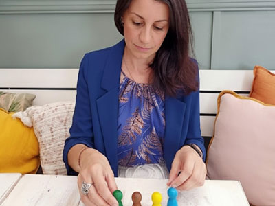

Individual Family Constellation sessions are conducted using figurines, offering the same depth and effectiveness as in-person sessions.
This method allows us to explore systemic dynamics in a safe and guided way, wherever you are.
You can participate in an Online or in- person Family Constellation group, either by bringing your own theme or by joining as a representative in someone else’s constellation.
To take part or have your theme included, simply express your interest and we will notify you of upcoming dates and availability. This is a shared systemic field experience that allows for deep insight through participation and observation.
This is not a constellation session. Instead, it is a reflective and experiential space that combines guided conversation and systemic exercises.
It is a space for insight, reflection, and conscious decision-making within your own healing process.
Family Constellations is a systemic approach that explores the hidden dynamics within family systems and relationships. It offers a space to observe how patterns, loyalties, and transgenerational influences may unconsciously shape our emotions, choices, and life experiences.
Through this work, what was previously unseen can become visible, allowing for greater awareness, understanding, and the possibility of inner reordering and reconnection with one’s place within the system.
What is a Systemic Integration Workshop?
The Systemic Integration Workshop is a complementary space that supports the ongoing process of awareness and integration that may arise from Constellation work or from life experiences in general.
It is not a constellation itself. Instead, it offers a reflective and supportive space where insights can be explored more deeply through dialogue, systemic understanding, and exercises. This process supports the integration of new perspectives